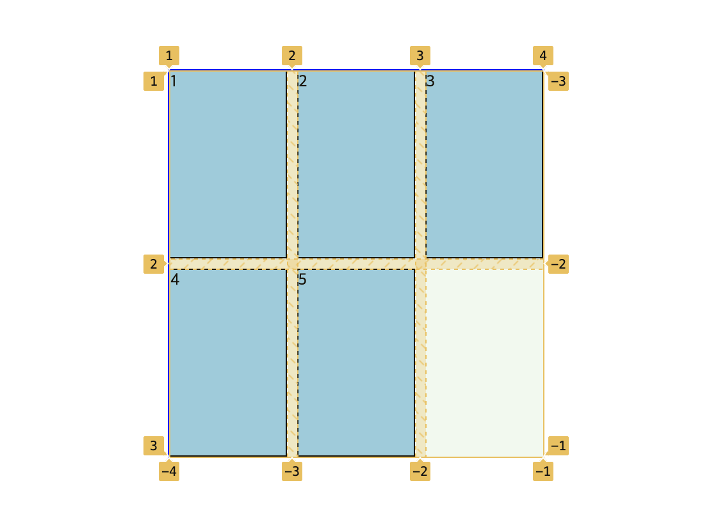

CSS요소9 - grid
grid
이차원 레이아웃 시스템으로 원하는 위치에 요소를 배치할 수 있고 공간을 더 많이 차지하도록 하는 등의 레이아웃을 구성할 수 있다
flex는 여러개의 아이템이 있을때 주축을 기준으로 배치된다 반면에grid는 주축과 교차축 전부에 요소를 배치하도록 한다- column: 열
- row: 행
- gutter: 행 사이 간격(gap)
- 열병합, 행병합이 가능하다
- 이전에는
table을 가지고 레이아웃을 구성했으나 현제는flex,grid를 사용한다 display를 이용해서 지정한다display를 이용해서 요소의 바깥쪽 레이아웃과 내부 레이아웃을 지정할 수 있다 (-를 가운데에).container { display: grid;
container에 사용되는 속성과 item에 사용되는 속성을 명시해서 정리하겠습니다
▶️ grid-template-rows, grid-template-columns
[container 속성]
가로(행) 세로(열)을 가지는지를 명시할 수 있다
.container {
display: grid;
grid-template-columns: 100px 100px 50px;
grid-template-rows: 100px 100px;
/* grid-template-columns: 1fr 1fr 1fr;
grid-template-rows: 1fr 1fr; */
}
- 공백으로 구분한다
- 각각 어떤 너비를 가지는지 설정가능하다
- 명시되지 않은 부분은 자신의 컨텐츠 크기를 가진다
- fr단위: 비율을 설정한다
- repeat: 반복횟수를 지정할 수 있다 (함수표기법 -
repeat(반복횟수, 크기))
▶️ grid-template-areas
[container 속성]
item이 container 내부 공간을 어느정도 차지할지를 명시적으로 지정할 수 있다
- HTML에서 item에 class를 미리 지정한다
- 각 class의 css에서
grid-area: name;을 이용해서 이름을 지정한다 grid-template-areas에서 지정된 이름으로 배치한다
.container {
display: grid;
grid-template-columns: 1fr 1fr 1fr;
grid-template-rows: 1fr 1fr;
grid-template-area:
"a a a"
"b . c";
}
- 네모 형태의 공간을 차지하도록 한다
.은 빈칸을 나타낸다
▶️ row-gap, column-gap
[container 속성]
열과 행 사이의 간격(gutter)을 지정할 수 있다
.container {
display: grid;
grid-template-rows: repeat(4, 1fr);
grid-template-columns: repeat(3, 1fr);
row-gap: 20px;
column-gap: 30px;
/* 20px씩 간격이 존재 */
/* 단축속성을 사용할 수 있다 */
gap: 20px 30px;
}
- 기본값은 0
- 최근 변경된 사항으로 접두사를 붙히지 않아도 동작한다 → 앞에 grid라는 접두사를 붙히면 예전 브라우저에서도 동작할 수 있다 (
grid-row-gap) gap이라는 단축속성을 이용해서row-gap,column-gap을 한번에 지정할 수 있다- 순서가 중요하다 (앞에 위치한 값은
row-gap, 뒤에 위치한 값은column-gap)
▶️ grid-auto-rows, grid-auto-columns
[conatiner 속성]
grid-template-rows, columns(명시적)로 지정한 공간을 넘어갔을때 grid-auto-rows, coumns(암시적)을 사용해서 미리 지정해둘 수 있다
.container {
display: grid;
grid-template-rows: repeat(2, 1fr);
grid-template-columns: repeat(3, 1fr);
grid-auto-rows: 100px;
grid-auto-columns: 100px;
}
- 기본값은
auto
▶️ grid-auto-flow
[container 속성]
item들이 어떠한 형태로 흘러갈지를 지정한다 (공간을 채울 방향을 결정한다)
.container {
display: grid;
grid-template-rows: repeat(2, 1fr);
grid-template-columns: repeat(3, 1fr);
grid-auto-flow: column dense;
}
row: 행방향을 기준으로 배치된다(기본값)columns: 열방향을 기준으로 배치한다dense: row, columns뒤에 공백과 함께 붙여준다 - 빈 영역을 차례대로 채워주며 배치된다
▶️ grid
[container 속성] [단축속성]
6가지 속성 (grid-template-rows, grid-template-columns, grid-template-areas, grid-auto-rows, grid-auto-columns, grid-auto-flow)을 한번에 작성할 수 있다
- 명시적인 속성:
grid-template-rows,grid-template-columns,grid-template-areas - 암시적인 속성:
grid-auto-rows,grid-auto-columns,grid-auto-flow
.conatiner {
display: grid;
grid: repeat(2, 1fr) / repeat(3, 1fr);
/* 행은 1fr 1fr / 열은 1fr 1fr 1fr */
grid : auto-flow dense 1fr 1fr / repeat(3, 1fr);
/* 행은 1fr 1fr / 열은 1fr 1fr 1fr , grid-auto-flow: row dense */
}
- 슬래시(
/)를 사용해서 두개로 나누는데 슬래시 앞부분은 행(row), 뒷부분은 열(column) 부분이다 - (명시적 / 명시적), (명시적 / 암시적), (암시적 / 명시적) 으로 사용될 수 있다
grid-template-rows, columns를 지정해주기 위해서 각각 슬래시를 기준으로 지정한다- grid-auto-flow를 지정해주기 위해서는 행부분 또는 열부분에
auto-flow라고 지정한다 grid-auto-rows, columns를 지정해주기 위해서는 (명/명) (명/암) (암/명)으로 작성되기 때문에auto-flow가 사용된 부분에서grid-auto-rows, columns의 값을 넣어주면 된다
▶️ justify-content
[container 속성]
item의 크기보다 container의 크기가 커서 남는 공간이 존재할 때 container를 배치한다(주축)
.container {
display: grid;
grid-template-rows: 1fr 1fr;
grid-template-columns: 1fr 1fr;
justify-content: center;
}
- 주축(→)을 기준으로 container의 위치를 결정한다
start: 시작점에 배치end: 끝점에 배치center: 가운데 배치space-between: item 사이의 공백을 동일하게space-around: 각 item에 앞뒤 여백을 동일하게
▶️ align-content
[container 속성]
item의 크기보다 container의 크기가 커서 남는 공간이 존재할 때 container를 배치한다(교차축)
.container {
display: grid;
grid-template-rows: 1fr 1fr;
grid-template-columns: 1fr 1fr;
align-content: center;
}
- 교차축(↓)을 기준으로 container의 위치를 결정한다
▶️ justify-item
[container 속성]
grid로 지정된 크기(1fr, 100px …)안에서 item의 크기가 작은 경우 지정된 크기 내에서의 정렬(주축)
.container {
display: grid;
grid-template-rows: 1fr 1fr;
grid-template-columns: 1fr 1fr;
justify-items: center;
}
.item {
width: 50%;
height: 50%;
}
stretch: 넓어질 수 있을 만큼 커짐(기본값)start: 시작점에 배치end: 끝점에 배치center: 중앙에 배치- 각각의 item에 따로 적용하고 싶은 경우, 각각의 item에
justify-self를 사용한다
▶️ align-item
[container 속성]
grid로 지정된 크기(1fr, 100px …)안에서 item의 크기가 작은 경우 지정된 크기 내에서의 정렬(교차축)
.container {
display: grid;
grid-template-rows: 1fr 1fr;
grid-template-columns: 1fr 1fr;
align-items: center;
}
.item {
width: 50%;
height: 50%;
}
stretch: 넓어질 수 있을 만큼 커짐(기본값)start: 시작점에 배치end: 끝점에 배치center: 중앙에 배치- 각각의 item에 따로 적용하고 싶은 경우, 각각의 item에
align-self를 사용한다
▶️ grid-row, grid-column
[item 속성] [단축속성]
grid로 인해서 생긴 격자번호에 따라 지정된 칸의 영역을 차지할 수 있도록 한다

.container {
display: grid;
grid-template-rows: repeat(2, 1fr);
grid-template-columns: repeat(2, 1fr);
}
.item {
grid-row-start: 0;
grid-row-end: 2;
/* 위와 동일하다 */
grid-row: 0 / 2;
}
grid-row,grid-column을 사용할때 시작점을 슬래시(/)앞에 입력하고 뒤에 span 과 숫자를 입력하면 시작점에서 숫자칸만큼을 차지할 수 있다grid-row: 1 / span 2;
▶️ grid-area
[item 속성] [단축속성]
grid-row-start, grid-column-start, grid-row-end, grid-column-end 네가지 속성을 설정할 수 있는 단축속성이며, grid-template-areas의 name을 지정할 때 사용한다
.container {
display: grid;
grid-template-rows: repeat(3, 1fr);
grid-template-columns: repeat(3, 1fr);
}
.item {
/* grid-area: grid-row-start / grid-column-start / grid-row-end / grid-column-end; */
grid-area: 4 / 2 / span2 / -1;
}
- 순서를 지켜줘야 한다 (
grid-row-start,grid-column-start,grid-row-end,grid-column-end) - 두가지 형태로 사용된다 (name을 지정, 단축속성)
▶️ order
[item 속성]
item 별로 위치를 별도로 지정할 수 있다
.container {
display: grid;
grid-template-rows: repeat(3, 1fr);
grid-template-columns: repeat(3, 1fr);
}
.item {
order: 2;
}
- 기본값은 0
- 특정 item을 맨 앞부분으로 위치하기 위해서는 다른 item의 order값이 0이기때문에 -1을 사용하면 맨 앞으로 위치한다
- order가 같은 값이 주어지면 코드순서상으로 배치된다
▶️ z-index
[item 속성]
grid row, column으로 겹쳐졌을때, 쌓여진 순서르 제어할 수 있다
.container {
display: grid;
grid-template-rows: repeat(3, 1fr);
grid-template-columns: repeat(3, 1fr);
}
▶️ grid 단위
1. fr (fraction)
- 비율을 사용해서 나눌때 사용한다
- container 내의 모든 부분을 기준으로 한다
2. min-content
.container {
grid-template-columns: min-content 1fr;
}
- 단위처럼 사용가능하다
- 내부 내용을 기준으로 차지할 수 있는 가장 작은 영역을 차지한다
- 영문으로 구성된 내용을 가질때 가장 큰 단어의 너비만큼 (단어는 잘라서 볼 수 없음)
3. max-content
.container {
grid-template-columns: max-content 1fr;
}
- 단위처럼 사용가능하다
- 내부 내용을 기준으로 차지할 수 있는 가장 큰 영역을 차지한다
4. auto-fill
.container {
grid-template-columns: repeat(auto-fill, 100px);
/* minmax와 함께 사용되면 여백을 생기게 하지 않도록 할 수 있다 */
grid-template-columns: repeat(auto-fill, minmax(100px, 1fr))
}
repeat과 함께 쓰인다- minmax를 이용해서 여백을 생기게 하지 않도록 할 수 있다
- 100px이 들어갈 수 있으면 넣고 그게 아니면 전체적으로 1fr의 크기(전체를 나눠가짐)를 가지므로 여백이 생기지 않는다
5. auto-fit
.container {
grid-template-columns: repeat(auto-fill, minmax(100px, 1fr))
}
- item이 부족해서 여백이 생길 수 밖에 없는 상황에서 사용한다
auto-fill의 경우 지정된 크기가 들어올 수 있는값이 된 경우 item을 배치하는데 이때 item이 없으면 여백이 된다 하지만auto-fit을 이용하면 여백을 채우게 된다